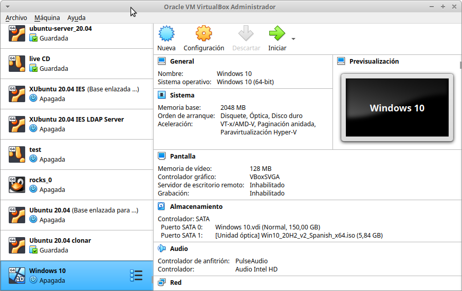
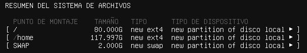

VirtualBox#

Resumen:
OVF/OVA : es un estándar abierto para empaquetar y distribuir un dispositivo virtual que consta de una o varias máquinas virtuales (VM).
Clonación completa: se crea una copia exacta e independiente de la máquina original, incluyendo todos los archivos de disco duro virtual. Tarda más y ocupa más espacio, pero el clon no depende para nada de la máquina original (se puede mover o borrar cualquiera de las dos).
Clonación enlazada: se crea una nueva máquina, pero sus discos virtuales no son una copia, sino archivos de diferencias vinculados a los discos de la máquina original (VirtualBox crea para ello una instantánea de la original). Por eso el clon se crea casi al instante y ocupa muy poco espacio: solo va guardando lo que cambia respecto a la original. A cambio, la máquina original no se puede borrar mientras existan sus clones, y no podrás mover el clon a otro ordenador sin mover también los discos originales. Es la que usaremos en los casos prácticos para crear varias máquinas a partir de una misma base.
Al clonar, en Política de dirección MAC conviene elegir "Generar nuevas direcciones MAC para todos los adaptadores de red": como ya sabemos, en una misma LAN no puede haber dos interfaces de red con igual MAC, y si el clon conserva las MAC de la original tendremos problemas de red a nivel de enlace en cuanto arranquen las dos a la vez. Si nos encontramos con MAC duplicadas después de clonar, hay que cambiarlas a mano en la configuración de red de la MV.
VirtualBox Guest Additions es un conjunto de controladores y aplicaciones del sistema que mejoran el rendimiento y la funcionalidad de un sistema operativo invitado que se ejecuta dentro de una máquina virtual de VirtualBox. Cuando instalas las Guest Additions en el sistema operativo invitado, se habilitan funciones como carpetas compartidas, integración de ratón sin problemas, mejor soporte de video y mejor rendimiento.
El paquete de Guest Additions proporciona controladores adicionales para el hardware de tu máquina virtual, incluyendo gráficos, redes y dispositivos de entrada. También incluye utilidades que te permiten redimensionar la ventana de la máquina virtual dinámicamente, compartir carpetas entre el sistema anfitrión y el invitado, y habilitar el intercambio de portapapeles.
Las instantáneas (snapshots) en VirtualBox son una característica que te permite guardar el estado actual de una máquina virtual en un punto específico del tiempo. Con las instantáneas, puedes capturar una imagen completa de la máquina virtual, incluyendo su configuración, discos virtuales y memoria, y luego restaurarla posteriormente si es necesario.
Al crear una instantánea, VirtualBox guarda una copia del estado actual de la máquina virtual, incluyendo los registros de la CPU, la memoria y el estado de los discos virtuales. Esto te permite revertir fácilmente a ese punto en el tiempo en caso de que realices cambios o configuraciones que desees deshacer más adelante.
Las tecnologías VT-x (Intel Virtualization Technology) y AMD-V (AMD Virtualization) son extensiones de hardware que proporcionan soporte para la virtualización en procesadores Intel y AMD, respectivamente. Estas tecnologías permiten que los hipervisores, como VirtualBox, ejecuten máquinas virtuales de manera más eficiente y segura. Si habilitamos esa opción, entonces también podremos habilitar "Habilitar paginación anidada" que mejorará aún más el rendimiento del sistema permitiendo gestionar la memoria por medio del hardware y no del software.
los discos duros estáticos tienen un tamaño fijo, ofrecen un rendimiento constante pero pueden ocupar más espacio en el almacenamiento del host. Los discos duros dinámicos crecen según sea necesario, permiten un uso eficiente del almacenamiento y son más fáciles de migrar y copiar, pero pueden experimentar fragmentación y pueden tener un rendimiento ligeramente inferior en comparación con los discos estáticos
La opción PAE/NX permite habilitar el acceso a más de 4 GB de memoria RAM en sistemas de 32 bits y se habilita la protección NX para mejorar la seguridad del sistema. Si se deshabilita, el sistema operativo y las aplicaciones estarán limitados a utilizar solo 4 GB de memoria y no se aprovechará la protección NX.
En “Carpetas Compartidas”, podemos crear una carpeta compartida entre la máquina anfitrión y la invitada. Para ello, hacemos clic en “Agregar Carpeta compartida”…
En Avanzado, podemos cambiar otras opciones, como puede ser el permitir que ambos sistemas, el invitado y el anfitrión, puedan compartir el portapapeles, lo que permitirá copiar y pegar de uno a otro.
RED
Cable conectado que se encuentra en la parte de opciones avanzadas en la sección de red de la MV (también en el menú contextual del icono de red que se encuentra en la parte inferior derecha de la ventana de la MV, eligiendo Connect Network Adapter, o a través del menú de la MV Dispositivos -> Red).
Modo NAT es la forma más sencilla que tiene una MV para acceder a una red externa. Por lo general, no se requiere ninguna configuración en la red, ni en el anfitrión ni en el invitado. Por esta razón, es el modo de red por defecto en VB. En modo NAT, VB coloca un router entre el exterior (hacia donde hace NAT) y el invitado. Dicho router posee un servidor DHCP que sirve hacia el interior. Este router mapea el tráfico desde y hacia la MV de forma transparente. Cada MV en modo NAT tendrá su propio router, por lo que estarán en redes aisladas, lo que implica, que por defecto, las MMVV que tienen su tarjeta de red en modo NAT no pueden verse entre sí. La MV recibe por DHCP la IP 10.0.2.15, con puerta de enlace 10.0.2.2 y DNS 10.0.2.3.
Modo Red NAT, el cual funciona como el router de nuestra casa, es decir, los equipos que estén dentro de la misma red NAT podrán comunicarse entre sí, y es aquí donde radica la diferencia con el modo NAT el cual siempre constituye una red con un único equipo y no de varios como ahora es el caso. Para utilizarlo tenemos que crear la red NAT : Desde el menú Archivo -> Herramientas -> Administrador de red -> Redes NAT. La red que crea VirtualBox por defecto (NatNetwork) es la 10.0.2.0/24, con puerta de enlace 10.0.2.1 y servidor DHCP en la 10.0.2.3, que reparte IP a partir de la 10.0.2.4. Si ponemos las IP a mano, conviene desactivar el DHCP de la red NAT para que no haya conflictos.
Reenvío de puertos: con NAT y Red NAT las MMVV salen al exterior, pero desde fuera (incluido el anfitrión) no se puede llegar a ellas. Para eso está el reenvío de puertos: una regla que redirige lo que llega a un puerto del anfitrión hacia un puerto de una MV. Por ejemplo, la regla TCP, IP anfitrión 127.0.0.1, puerto anfitrión 2222, IP invitado 10.0.2.4, puerto invitado 22 permite conectarse por ssh a la MV desde el anfitrión con
ssh -p2222 user@127.0.0.1. En modo NAT se configura en Configuración -> Red -> Avanzadas -> Reenvío de puertos, y en Red NAT en la pestaña Reenvío de puertos de la red.Modo Adaptador puente simula que la tarjeta virtual está conectada al mismo switch que la tarjeta física del anfitrión, por lo tanto, la MV se va a comportar como si fuese un equipo más dentro de la misma red física en la que está el equipo anfitrión.
Modo Red interna, podemos construir redes aisladas, en las cuales solo habrá comunicación entre las MsVs que pertenezcan a la misma red interna (por defecto se llama intnet). En una red interna no hay ningún router de VirtualBox ni servidor DHCP, así que las MMVV no tienen salida a internet y hay que ponerles las IP a mano.
Modo Solo-anfitrión se utiliza para crear una red interna a la que pertenecerá también el equipo anfitrión, algo que no sucede en el modo Red interna. La red que crea VirtualBox por defecto es la 192.168.56.0/24: el anfitrión tiene la 192.168.56.1 y el servidor DHCP la 192.168.56.100. Tampoco tiene salida a internet.
Resumen de los modos de red:
Modo |
MV ↔ MV |
MV → anfitrión |
Anfitrión → MV |
Internet |
|---|---|---|---|---|
NAT |
No |
Sí |
Solo con reenvío de puertos |
Sí |
Red NAT |
Sí |
Sí |
Solo con reenvío de puertos |
Sí |
Adaptador puente |
Sí |
Sí |
Sí |
Sí |
Red interna |
Sí |
No |
No |
No |
Solo-anfitrión |
Sí |
Sí |
Sí |
No |
Ejercicios de introducción#
Para practicar la creación de máquinas virtuales, la clonación, los modos de red y las particiones:
Comandos útiles de VirtualBox#
VBoxManage list vms: Listar máquinas virtualesVBoxManage list runningvms: Listar máquinas virtuales que están ejecutándoseVBoxManage startvm 'Ubuntu Server 24.04' --type headless: Ejecutarla sin entorno gráficoVBoxManage controlvm 'Ubuntu Server 24.04' savestate: Guardar el estado
En modo gráfico (Ctrl_derecho es la tecla anfitrión por defecto):
Ctrl_derecho: libera el ratón y el teclado capturados por la MVCtrl_derecho + Supr: Ctrl + Alt + SuprCtrl_derecho + f: pasar/volver de pantalla completaCtrl_derecho + c: pasar/volver de modo escalado
Caso práctico: MV Ubuntu Server 26.04#
Descárgate el sistema operativo Ubuntu Server 26.04 LTS en formato (ISO) de su página oficial
Utiliza un disco de 200 GB y 4 GB de RAM
Iniciamos la máquina y procedemos a la instalación, llama a esta máquina virtual MV Ubuntu Server 26.04
Utiliza un adaptador puente para la red con IP 10.4.X.Y/8 (255.0.0.0), donde X.Y son parte de las ips de vuestros equipos, en el caso de que tengas un portátil utiliza DHCP o una Red Nat.
DNS 8.8.8.8, Gateway 10.0.0.2 y subred 10.0.0.0/8
Hacemos el siguiente esquema de particiones, para ello selecciona (x) Custom storage layout

Usuario: tunombre y utiliza de contraseña: alumno Para el nombre del servidor utiliza compute-0-0, si no lo has hecho durante la instalación modifica el archivo /etc/hostname
Vídeos Ubuntu 26.04:
Vídeos Ubuntu 24.04: vídeo de instalación , vídeo de configuración ssh server + MobaXterm, vídeo ssh-copy.id , Gestión de usuarios
Caso práctico: Windows 11#
Descárgate la ISO de Windows 11 de la página de Microsoft
Creamos una nueva máquina virtual llamada Windows11
Creamos una máquina virtual con 100GB de disco duro reservado dinámicamente, 4GB de RAM, dos procesadores, un adaptador en modo puente y una memoria de vídeo de 128MB. Omite la instalación desatendida y habilita EFI, Secure Boot y el TPM
Para la instalación desconecta el cable de red virtual:
Configuración/Red/Adaptador1/Avanzadas/[ ]Cable conectado
En el caso de que aparezca el aviso de "startup.nsh" en VirtualBox, presionamos shift+F10 y cambiamos el idioma a English, vamos a continuar y pasamos al menú de instalación.
Selecciona "No tengo clave de producto" y selecciona Windows 11 Education
Selecciona la instalación personalizada : instalar solo Windows (avanzado)
Configuramos Windows con una cuenta local [1], para ello :
Omitimos una segunda distribución de teclado y cuando se quiera conectar a una red seleccionamos "No tengo internet"
Seguimos con Continuar con la configuración limitada
Configuramos Windows con una cuenta local
usuario : tunombre
contraseña : @lumn0
Preguntas de seguridad para esta cuenta:
¿Cuál era el nombre de tu primera mascota? @lumn0
¿Cuál es el nombre de la ciudad en la que naciste? @lumn0
¿Cuál era tu apodo de infancia? @lumn0
No permitimos que Microsoft y las aplicaciones usen tu ubicación, ni permitimos que encuentren nuestro dispositivo, es decir que en las siguientes preguntas, le diremos que "No" o "Solo los obligatorios": le daremos los mínimos permisos a Microsoft sobre nuestros datos y máquinas.
De igual manera rechazamos la ayuda del asistente digital y no usamos el reconocimiento de voz en línea
Notas
Caso práctico: Windows Server 2022#
Windows Server es la plataforma para crear una infraestructura de aplicaciones conectadas, redes y servicios web. Como administrador de Windows Server, probablemente haya usado muchas de las consolas nativas de Administración de Microsoft (MMC) de Windows Server para mantener la infraestructura segura y disponible.
Windows Server Standard: la licencia da derecho a ejecutar como máximo dos máquinas virtuales. Es ideal para un entorno no virtualizado o poco virtualizado.
Windows Server Datacenter: permite ejecutar un número ilimitado de máquinas virtuales. Se recomienda para un entorno altamente virtualizado que requiera características de alta disponibilidad, incluida la agrupación en clústeres.
Respecto a la interfaz de usuario, durante la instalación se ofrecen dos posibilidades (desde Windows Server 2016 la elección es definitiva: ya no se puede pasar de una a otra después de instalar, como sí permitía Windows Server 2012):
Server Core: reduce el espacio requerido en el disco, la posible superficie expuesta a ataques y especialmente los requisitos de servicio y reinicio del servidor.
Servidor con experiencia de escritorio (GUI): ofrece los elementos de la interfaz de usuario y las herramientas de administración gráficas.
Si no dispones de una licencia de Windows Server 2022, puedes obtener, de forma totalmente gratuita, una versión de evaluación plenamente funcional durante un periodo de 180 días en la siguiente dirección https://www.microsoft.com/es-ES/evalcenter/evaluate-windows-server-2022
Creamos una máquina virtual con 100GB de disco duro reservado dinámicamente, 4GB de RAM, 2CPU, un adaptador en modo puente y una memoria de vídeo de 128MB
Para la instalación seleccionamos: Windows Server 2022 Standard Evaluation (experiencia de escritorio)
Contraseña del Administrador: @lumn0
Utiliza un adaptador puente para la red con IP 10.4.X.Y/8 (255.0.0.0), donde X.Y son parte de las ips de vuestros equipos, en el caso de que tengas un portátil utiliza DHCP, DNS 8.8.8.8, Gateway 10.0.0.2
Configurar nombre: Panel / Servidor local : Cambiamos nombre equipo, le llamamos SRV-tunombre
Comprobar que la zona horaria sea la correcta : Servidor local / Ajustar zona horaria
Habilitamos ping : Administrador del servidor / Panel / Herramientas, buscamos la opción de Firewall de Windows con seguridad avanzada y nos vamos a las reglas de entrada, que es donde el firewall nos está bloqueando el tráfico. Buscamos la regla “Archivos e impresoras compartidas (petición eco: ICMPv4 de entrada)” y, con el botón derecho, la habilitamos
Caso práctico: Windows Server 2022 sin GUI#
Creamos una máquina virtual llamada WS22tunombre, con 100GB de disco duro reservado dinámicamente, 4GB de RAM, 2CPU, un adaptador en modo puente y una memoria de vídeo de 128MB
Para la instalación seleccionamos: Windows Server 2022 Standard Evaluation, sin "experiencia de escritorio" (la versión Server Core, sin la mayor parte del entorno gráfico)
Instalación nueva : Personalizada, instalar solo Windows (avanzado) y usamos todo el disco.
Contraseña del Administrador: @lumn0
Instala el servidor ssh
Utiliza un adaptador puente para la red con IP 10.4.X.Y/8 (255.0.0.0), donde X.Y son parte de las ips de vuestros equipos, en el caso de que tengas un portátil utiliza DHCP, DNS 8.8.8.8, Gateway 10.0.0.2
Cambia el nombre por WS22tunombre
Habilita el ping
Instala el editor vi